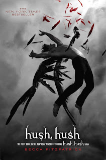

Saga Hush Hush

Hush Hush
Para Nora Grey, el romance no era parte del plan. Ella nunca se había sentido particularmente atraída
hacia los chicos de su escuela, sin importar lo mucho que su mejor amiga, Vee, los empujara hacia ella.
No hasta que Patch llegó a su vida. Con su sonrisa fácil y ojos que parecen ver dentro de ella, Nora se
siente atraída hacia él, en contra de todos sus instintos. Pero después de una serie de aterradores
encuentros, Nora no sabe en quien confiar. Patch parece estar donde quiera que esté ella, y saber más
sobre ella que sus amigos más cercanos. Ella no sabe si correr hacia sus brazos o correr y esconderse.
Y cuando intenta encontrar algunas respuestas, se acerca a una verdad que es mucho más incomoda que todo
lo que Patch la hace sentir. Nora esta justo en medio de una antigua batalla entre los inmortales y
aquellos que han caído y cuando tiene que escoger un bando, la elección equivocada le costará su vida.